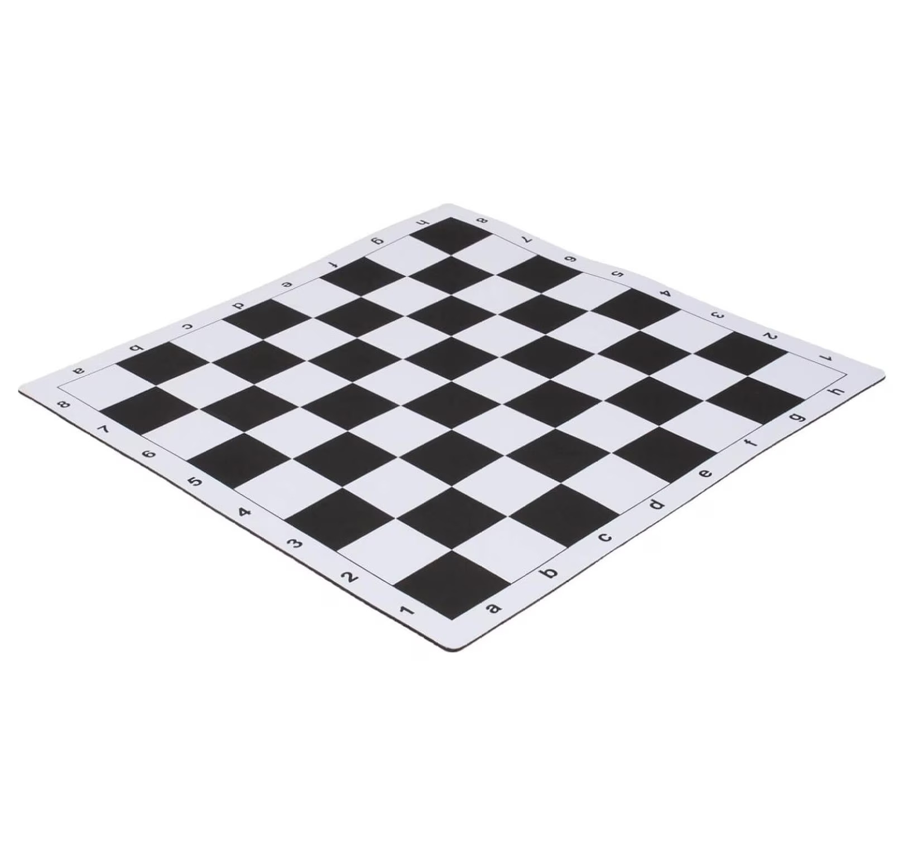
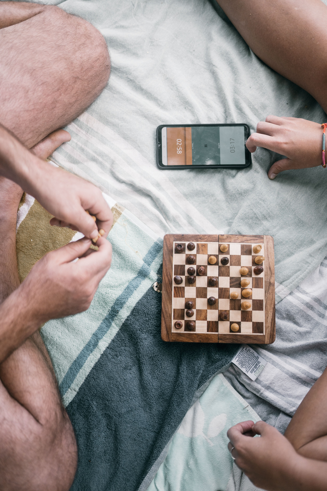
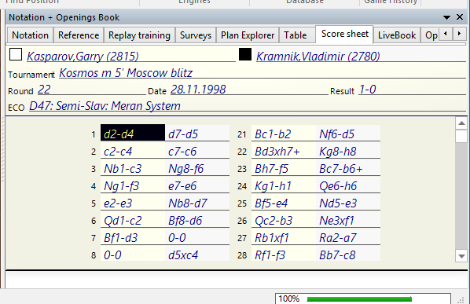

Chess Gear Guide
Unlike most sports, chess players are often expected to bring their own equipment to tournaments.
The 3 Essentials
Leave the glass or themed sets at home! You need a regulation vinyl or silicone roll-up board (typically with 2.25" squares) and a standard "Staunton" style plastic piece set.

Do not buy an analog clock. A digital clock with a "delay" or "increment" feature is required for modern tournament play. We recommend durable, standard brands favored by scholastic organizations.

What is a scorebook? A spiral-bound chess scoresheet where players record every move during the game using chess notation. Most tournaments require this once a player reaches a certain rating (usually around 1200+) or age group.

Why write down moves? It's an official tournament rule. It creates a record of the game, prevents disputes, and is used if a player runs out of time (the game can be reconstructed from the scoresheet).
How do you write down moves? Players use a shorthand called algebraic notation. For example:
- e4 means move a pawn to the e4 square
- Nf3 means move a Knight to the f3 square (the letter N represents the piece)
- Bxc5 means a Bishop captures something on c5 (the x means capture)
- 0-0 means castling kingside (a special move)
Your child will learn this notation in lessons or practice. Don't worry if it looks foreign now—they'll pick it up naturally as they play more games. You'll need a spiral-bound chess scorebook and mechanical pencils (no pen, in case of errors).